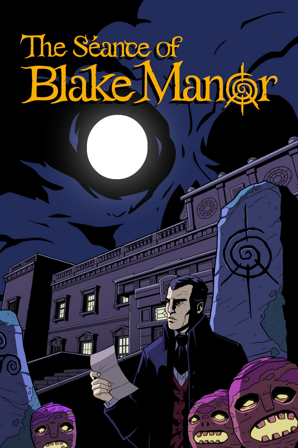

Game profile

The Seance of Blake Manor
Every archived year-end list appearance, including placement and points earned.
8List appearances
1Years represented
Points by Year
302025 points
List History
| Year | Source | List | Placement | Points |
|---|---|---|---|---|
| 2025 | Adventure Gamers | 10 best games of 2025: From indie hits to unforgettable adventures | 10 | 5 |
| 2025 | Eurogamer | The 50 best games of 2025, ranked | 19 | 3 |
| 2025 | GameRant | Top 10 Best Games of 2025 List | 10 | 5 |
| 2025 | Geeky Brummie | Top 50 Most Notable Games of 2025 | 50 | 1 |
| 2025 | Inverse | The 25 Best Games Of 2025, Ranked | 19 | 3 |
| 2025 | Rolling Stone · Christopher Cruz | The 25 Best Video Games of 2025 | 20 | 3 |
| 2025 | The Review Geek | 15 Best Video Games of 2025 | TheReviewGeek Recommends | 9 | 5 |
| 2025 | The Ringer | The Best Video Games of 2025 | 9 | 5 |